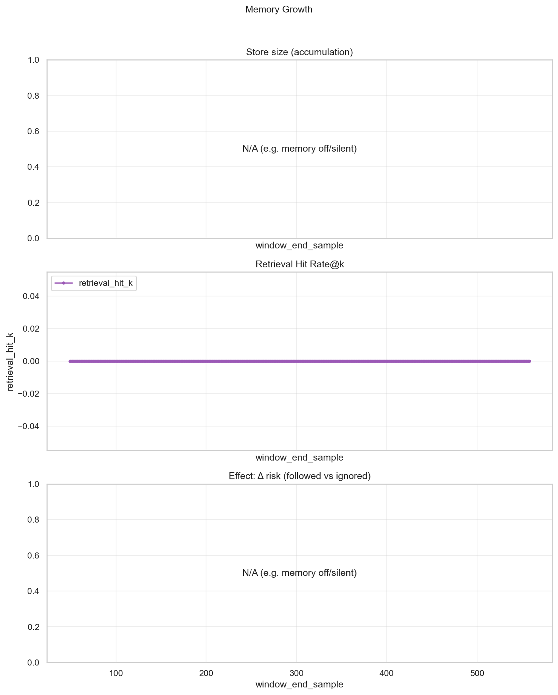

이 Run의 결론
본 Run은 샘플 수 N=559 기준, 구조 품질 통과율(Structural PASS) 0.0%, 극성 충돌률 0.5%, 위험 해소율 100.0%로 집계되었습니다.
Stage2 채택률 0.0%, 가이드 변경률 0.0%, 비가이드 드리프트 0.0%입니다. 골드 N=559 기준 Tuple F1(Stage1) 38.3%, F1(Stage2+Mod) 38.3%, ΔF1 0 (Tuple Aspect,Polarity).
추가 검증이 필요하면 Appendix의 샘플별 상세를 참고하세요.
| risk_id | count |
|---|
| Metric | Value |
|---|---|
| Aspect Hallucination Rate | 1.8% |
| Unsupported Polarity Rate | 83.5% |
| Metric | Value |
|---|---|
| Outcome Metrics (RQ) — paper-claimable | |
| Severe Polarity Error (L3) Rate | 0.5% |
| Polarity Conflict Rate (raw) | 0.5% |
| Polarity Conflict Rate (after representative) | 0.5% |
| generalized F1@0.95 | N/A |
| Tuple Agreement Rate (RQ2) | N/A |
| Stage Mismatch Rate (RQ2) | 0.0% |
| Process Control Metrics (Internal) — Validator-level diagnostic; not an outcome metric | |
| Risk-Flagged Rate | 0.5% |
| Validator Residual Risk Rate | 0.0% |
| Outcome Residual Risk Rate (internal) | 83.5% |
| Risk-Affected Change Rate | 0.0% |
| Risk-Resolved-with-Change (rate) | 0.0% |
| Risk-Resolved-without-Change (rate) | 0.0% |
| Ignored Proposal Rate | 100.0% |
| Metric | Value |
|---|---|
| Validator Clear Rate (Risk Resolution) | 100.0% |
| Guided Change Rate | 0.0% |
| Unguided Drift Rate | 0.0% |
| Stage2 Adoption Rate | 0.0% |
| Metric | Value |
|---|---|
| Pre-to-Post Change Rate | 0.0% |
| Review Action Rate | 0.0% |
| Arb Intervention Rate | 0.0% |
| Guided-by-Review Rate | 0.0% |
| Metric | Value |
|---|---|
| Debate Mapping Coverage | N/A |
| Debate Mapping Direct Rate | N/A |
| Debate Mapping Fallback Rate | N/A |
| Debate Mapping None Rate | N/A |
| Debate Fail (no_aspects) | N/A |
| Debate Fail (no_match) | N/A |
| Debate Fail (neutral_stance) | N/A |
| Debate Fail (fallback_used) | N/A |
| Debate Override Applied (count) | 0 |
| Debate Override Skipped Low Signal (count) | 0 |
| Debate Override Skipped Conflict (count) | 0 |
| Debate Override Skipped Already Confident (count) | 0 |
| Debate Override Skipped Already Confident (rate) | N/A |
| Override Applied Rate (RQ3) | 0.0% |
| Override Success Rate (RQ3, risk 개선·안전) | N/A |
| Subset | n | ΔF1 (mean) | Unsupported Polarity | Negation/Contrast Fail |
|---|---|---|---|---|
| Override Applied | 0 | N/A | N/A | N/A |
| Skipped (Conflict) | 0 | N/A | N/A | N/A |
| Metric | Value |
|---|---|
| N (with gold) | 559 |
| N_gold_explicit | 299 |
| N_gold_implicit | 279 |
| Stage1 tuples (mean/sample) | 1.1556 |
| Stage2 tuples (mean/sample) | 1.1556 |
| Final tuples (mean/sample) | 1.1556 |
| Tuple F1 (Stage1) | 0.3831 |
| Tuple F1 (Stage2+Moderator, explicit-only) primary | 0.3667 |
| Tuple F1 (Stage2+Moderator, overall) | 0.3831 |
| ΔF1 (S2−S1) | 0 |
| Fix Rate ↑ | 0.0% |
| Break Rate ↓ | 0.0% |
| Net Gain ↑ | 0 |
| Tuple F1 (Stage2+Moderator, implicit-only) | 0.7814 |
| Implicit invalid pred rate | 19.4% |
| Implicit gold sample n | 279 |
| Implicit invalid sample n | 54 |
| Correction Precision | N/A |
| Conservative Improvement Score (λ=2) | 0 |
| Rule | Count |
|---|---|
| RuleA | 0 |
| RuleB | 0 |
| RuleM | 0 |
| RuleD | 0 |
| Metric | Value |
|---|---|
| Self-consistency (exact) | N/A |
| Self-consistency eligible | N/A |
| n_trials | 1 |
| Risk-set consistency | N/A |
| Flip-flop rate (RQ2) | N/A |
| Variance (RQ2) | N/A |
| Metric | Value |
|---|---|
| Latency p50 (ms) | 1247 |
| Latency p95 (ms) | 2083 |
| Gate status | PASS: 559 |
| Parse failure rate | 0.0% |
| Generate failure rate | 0.0% |
| Fallback used rate | 0.0% |
| Metric | Value (last window) |
|---|---|
| window_end_sample | 558 |
| window_size | 50 |
| memory_mode | off |
| store_size | — |
| store_new_entry_rate | 0.0000 |
| advisory_presence_rate | 0.0000 |
| follow_rate | — |
| mean_delta_risk_followed | — |
| mean_delta_risk_ignored | — |
| harm_rate_followed | — |
| harm_rate_ignored | — |
| retrieval_hit_k | 0.0000 |
| mean_tuple_f1_s2 | — |
| accuracy_rate | — |

| Metric | Value |
|---|---|
| HF Polarity Disagreement Rate | N/A |
| HF Disagreement Coverage of Structural Risks | N/A |
| Conditional Improvement Gain (HF-disagree) | N/A |
| Conditional Improvement Gain (HF-agree) | N/A |
| Metric | Overall | HF-agree | HF-disagree |
|---|---|---|---|
| Validator Clear Rate (Risk Resolution) | 100.0% | N/A | N/A |
| Stage2 Adoption Rate | 0.0% | N/A | N/A |
| Polarity Conflict Rate (same-aspect only) | 0.0% | N/A | N/A |
| Stage Mismatch Rate (RQ2: RuleM / S1≠S2) | 0.0% | N/A | N/A |
| text_id | input (preview) | final_label | selected_stage | latency |
|---|---|---|---|---|
| nikluge-sa-2022-dev-01026 | 전 우리딸이나 남편이 거의 쓰겠지만 요즘 반려동물 많이 키우시니까 그분들도 써보시면 만족하실꺼에요. | — | — | 2587 ms |
| nikluge-sa-2022-dev-02407 | 요색넘나넘나조음꺄갸 | — | — | 1986 ms |
| nikluge-sa-2022-dev-00451 | 집 앞에 나갈 때나 메이크업을 하지 않는 날 자연스럽게 내 피부인 듯 #피부톤보정 하기 딱 좋거든요~ | — | — | 1449 ms |
| nikluge-sa-2022-dev-02594 | 부드럽게 발리면서 흡수력도 좋아서 만족스럽네요 | — | — | 1740 ms |
| nikluge-sa-2022-dev-00440 | 베개 하나 바꿨을 뿐인데 완전 수면의 질이 달라지는 걸 경험함........ | — | — | 1476 ms |
| nikluge-sa-2022-dev-01386 | 생활방수까지 가능하다니 #데일리백 으로도 좋지만 휴가지에서 #수영가방 으로 사용해도 되겠쟈나.. | — | — | 2015 ms |
| nikluge-sa-2022-dev-01643 | #천연화장품 이라성분도 좋은데 가격도 착해~ | — | — | 1450 ms |
| nikluge-sa-2022-dev-01943 | 화장기초로 Good! | — | — | 1818 ms |
| nikluge-sa-2022-dev-01062 | #디자인 도 #삼각멀티탭 이라 물이 혹시 튀거나 이물질로 부터 보호가 가능해서 안전하기까지! | — | — | 2524 ms |
| nikluge-sa-2022-dev-01294 | 무기자차 100% 화학성분이 들어있지않아 예민한 피부에도 아이도 안심하고 사용할수 있는 노멀노모어 블루테라피… | — | — | 1894 ms |
| nikluge-sa-2022-dev-00808 | 8가지 화학성분이 없어서 민감성 피부도 편하게 쓸 수 있어요.. | — | — | 1617 ms |
| nikluge-sa-2022-dev-00804 | 진짜 시작하기 전에 제가 요즘 운동하고 밤샘도 많이하고.. 모공에 얼굴이 들뜨고 푸석하고 정말 말도 아니였는… | — | — | 2037 ms |
| nikluge-sa-2022-dev-01034 | 핵산 시어버터 슈퍼리치 핸드밤인데 진심 촉촉하고 보들보들해집니다~~ | — | — | 1547 ms |
| nikluge-sa-2022-dev-01162 | 이번에 만나본 #대디베이비 는 성분도 착하고 원단도 도톰해서 만족! 👍👍 | — | — | 1412 ms |
| nikluge-sa-2022-dev-02113 | 무려 10단계의 정제수를 사용, 천연 펄프로 리얼 엠보싱 원단 으로 만들어서 보송 보송하다! | — | — | 2282 ms |
| KPI | 로그/집계 필드 |
|---|---|
| Severe Polarity Error (L3) | severe_polarity_error_L3_rate (aspect match, polarity mismatch) |
| Polarity Conflict Rate | polarity_conflict_rate (same-aspect after representative) |
| generalized F1@0.95 | generalized_f1_theta (Neveditsin variant θ=0.95) |
| Tuple Agreement Rate | tuple_agreement_rate (n_trials≥2, final tuple sets equal) |
| Tuple F1 (Final) | tuple_f1_s2_explicit_only / tuple_f1_s2 (primary: explicit-only) |
| Validator Clear Rate | Process. validator_clear_rate (Validator-level diagnostic) |
| Validator Residual Risk Rate | Process. validator_residual_risk_rate (internal diagnostic) |
| Self-Consistency | self_consistency_exact (trial label agreement) |
| Flip-flop Rate | flip_flop_rate (variance proxy) |
| Override Applied Rate | override_applied_rate |
| Override Success Rate | override_success_rate |
| Store Size | memory_growth_metrics.store_size |
| Retrieval Hit Rate@k | memory_growth_metrics.retrieval_hit_k |